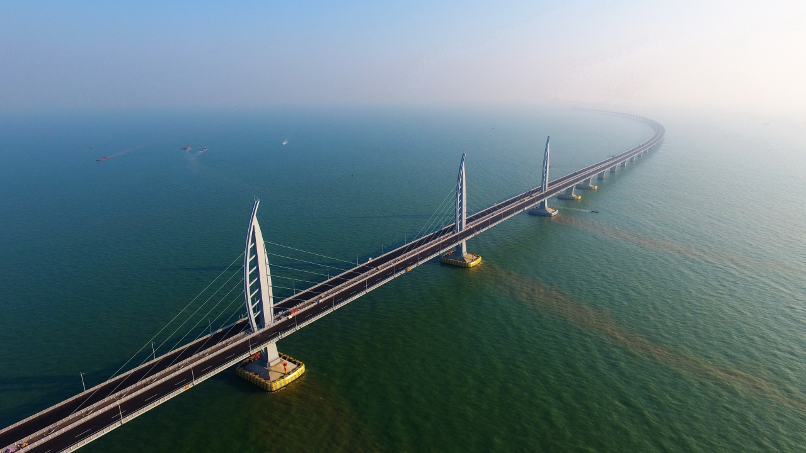

The Danyang Kunshan Bridge is the world's longest bridge and is 102.4 mi (164.8 km) long. The 164.8 km long Danyang-Kunshan Grand Bridge connects China with the Beijing–Shanghai High-Speed Railway. The bridge is considered to be the world’s select few engineering marvels presently. Linking popular metropolitan cities of China, namely Shanghai and Nanjing in the Jiangsu Province, this overpass bridge is the lifeline of the nation. In operation since 2011, Danyang-Kunshan Grand Bridge runs parallel to China’s renowned Yangtze River for approximately 8 to 80 kilometers in the southern side of the river. This bridge touches many populated areas, namely Danyang, Changzhou, Wuxi, Suzhou, and Kunshan, among others.
By 2006, a definite work plan had been established, and construction began. The construction of the Danyang-Kunshan Grand Bridge took four years and a lot of labor.With a workforce of 10,000 people, the Danyang-Kunshan Grand Bridge construction work was completed in 2010 and opened for public transport in 2011.
The construction of Danyang-Kunshan Grand Bridge wasn’t an easy task. Being a mega dream project, it was expected to bring a boom in China’s communication infrastructure. China gave a boost to its industrial capabilities from early 2000 by planning to construct several long bridges. To fulfill that ambition, building the longest bridge in Asia was the need of the hour.

CHANGHUA-KAOHSIUNG VIADUCT (Taiwan)
The Chang-hua–Kao-hsiung Viaduct is the world’s second longest bridge and serves as part of the Taiwan High Speed Rail network. Reaching 157.3 km (97.8 miles) in length, the bridge runs from Zouying in Kao-hsiung to Baguashan in Chang-hua county. The bridge and train line were built to minimize earth quake damage, as the area is prone to seismic activity.
Awesome factor:
Part of what makes this viaduct so unique is that it’s one of a series of bridges designed to be earthquake resistant. It allows for trains to stop safely during seismic events. The design also limits damage to individual sections of the viaduct so it can be repaired quickly after an earthquake.
CANGDE GRAND BRIDGE (China)
This bridge, the world’s fourth longest, is the third on our list that’s part of the Beijing-Shanghai High-Speed Railway. This bridge is almost 66 miles long and has a total of 3,092 piers.
Awesome factor:
The series of bridges that carry the railway line cut travel time across Hong Kong, Macau, and mainland China from three hours to just 30 minutes. Cangde Grand Bridge is the world's fourth longest bridge. Finished in 2010, the bridge is a part of the Beijing–Shanghai High-Speed Railway and is the third longest bridge on the railway. The bridge has been designed with a view to withstanding earthquakes The total length of the Cangde super-large bridge is 105.81 km (65.75 mi) and it has a total of 3092 piers.
Tianjin grand bridge (China)
Building the Tianjin Grand Bridge was a very complex project. Much of the viaduct runs through the densely populated urban area surrounding the metropolis. The idea of running the high-speed train along an elevated viaduct was a smart solution: every kilometre of railway built on the ground would have required 28.4 hectares (70 acres) of earthworks, and therefore would have had a devastating environmental impact on the urban area. Opting for an elevated solution, on the other hand, made it possible to reduce the infrastructure’s physical impact in urban areas as much as possible, without forcing the project designers to change the train’s route.
Awesome factor:
This may not be the most beautiful bridge on the list, but its structure is unique. It consists of a series of box girders, each more than 100 feet long, weighing 860 tons apiece. The girders were made in two workplaces along the bridge route, brought to where they needed to be installed, and then placed on piers already in place by a special crane. Lifts similar to those offered by BridgeMasters were used as part of the construction process.
WEINAN WEIHE GRAND BRIDGE (CHINA)
The Weinan Weihe Grand Bridge is a part of the Zhengzhou–Xi'an High-Speed Railway which connects Zhengzhou and Xi'an in China. The 79.732-kilometer (49.543 mi)-long bridge crosses the Wei River twice, as well as many other rivers, such as the Ling River, Luofu River, Xi River, Shi Di River and many more, highways and railways.[1] Upon its completion, it was the longest bridge in the world, but surpassed by two new bridges on Beijing–Shanghai High-Speed Railway that completed in 2010.
The bridge was completed in 2008 but the railway line itself did not open until February 6, 2010.It is now the 3rd longest bridge in the world.
During construction of the Weinan Weihe Grand Bridge, there were at least 10,000 workers 2,300,000 cubic meters of concrete and 45,000 tons of steel.
Awesome factor:
This viaduct is another major feat of engineering. There were more than 10,000 workers involved in its construction. It required upward of 2.3 million cubic meters of concrete and 45,000 tons of steel to be completed.
BANG NA EXPRESSWAY (Thailand)
The title of ''world's longest bridge'' is an honorific that has been proudly held by several structures throughout history. While the bridges themselves differ, the one constant is that the nation containing this bridge is sure to brag about it. At the dawn of the new millennium, that bragging right belonged to Thailand, the nation that also has the coolest color of tea (if you haven't tried Thai tea -- check it out). Known as the Bang Na Expressway, this overland road bridge was the longest in the world from 2000 to 2010. Brag away, Thailand.
Awesome factor:
This is a utilitarian- looking structure, but it’s highway- over- highway design makes it unique and quite a feat of engineering.
BEJING GRAND BRIDGE (CHINA)
At just under 30 miles long, this viaduct connects the two global business hubs of Beijing and Shanghai. It is the fourth bridge that’s part of the Beijing-–Shanghai High-Speed Railway to be on make our list. It was completed in 2010 and officially opened to rail traffic in 2011.
Beijing Grand Bridge is a 48.15-kilometer (29.92 mi)-long railway viaduct on the Beijing–Shanghai High-Speed Railway, located in Beijing. It is one of the longest bridges in the world.
Awesome factor:
People taking trips on the Beijing-–Shanghai High-Speed Railway begin or end their journeys on this bridge. It is located just south of Beijing
LAKE PONTCHARTRAIN CAUSEWAY (United States)
The Lake Pontchartrain Causeway, also known as The Causeway, is a fixed link composed of two parallel bridges crossing Lake Pontchartrain in southeastern Louisiana, United States. The longer of the two bridges is 23.83 miles long
The Lake Pontchartrain Causeway is the longest bridge in the United States and the longest in the world that runs continuously over water. The causeway consists of two parallel bridges crossing Lake Pontchartrain in southern Louisiana. The longer of the two bridges is almost 24 miles in length. The first of the two bridges was completed in 1956. When traffic on it exceeded capacity, the second was added. Construction was finished, and it was opened to traffic in 1969.
Awesome factor:
The causeway has survived many hurricanes over the years, including Hurricane Katrina in 2005. During that major storm, the only damage to the structure was to a few turnarounds.
WUHAN METRO BRIDGE (CHINA)
Line 1 of the Wuhan Metro isn’t a bridge in the traditional sense. It’s actually the longest continuous metro system viaduct in the world. The entire line is almost 24 miles long and has 32 stations. It carries an elevated light rail line through Wuhan. It opened in 1995 and underwent renovations in 2003.Connecting Huangpu with Zongguan station, the first phase of the line 1 was extended in 2010 to link Dijiao station to Huangpu and Zongguen to Dongwudadao station. Line 2 connects Haikou and Wuhan provinces, while line 3 connects Tunyang Avenue with Hankou District.
Awesome factor:
Line 1 is part of an extended train system that makes it easy for people to travel throughout Wuhan.
MANCHOS SWAMP ( United States)
The Manchaca Swamp Bridge is a twin concrete trestle structure located in the Lake Pontchartrain area of Louisiana. At almost 23 miles long, it is one of the longest bridges in the world built over water, along with being the longest on the United States Interstate Highway System. The bridge opened in 1979. Piles had to be driven more than 250 feet below a swamp to construct it. At the time, it cost $7 million per mile to complete.
Awesome factor:
This is the only bridge on our list that is thought to be haunted by a Cajun werewolf known as a Rougarou and a voodoo princess. It’s also the only one that houses alligators under